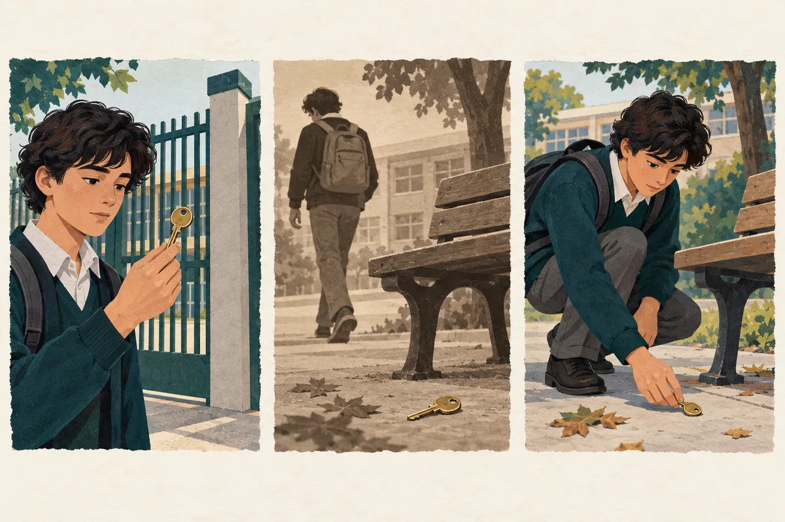

Competencia Lectora · Lectura acompañada
Interpretar relatos: narrador, tiempo y conflicto
Relacionar la perspectiva del narrador, el orden temporal y las acciones para construir una interpretación del relato.
1 lectura breve · 6 preguntas · Acceso individual asignado · Sin límite de tiempo
Guía 3
Interpretar relatos: narrador, tiempo y conflicto
6 preguntas · Sin límite de tiempo
Objetivo de la clase
Interpretar un relato relacionando la voz narrativa, el orden temporal y las acciones de los personajes con su conflicto.
¿Qué aprenderé a hacer?
- Distingo quién cuenta de quién participa.
- Reconstruyo la secuencia de los hechos.
- Relaciono una decisión del personaje con el conflicto del relato.
Instrucciones de trabajo · Antes de comenzar
Necesitas esta guía y tu cuaderno. Trabaja de forma individual; conversa sobre el ejemplo cuando el docente lo indique.
- Lee el objetivo, activa lo que sabes y observa el esquema y el ejemplo resuelto.
- Lee el texto breve completo. Avanza una pregunta a la vez; puedes escuchar la lectura y volver a ella.
- Responde las seis preguntas usando las pistas de procedimiento. Esta práctica acompañada mantiene los apoyos.
- Marca una alternativa A–D por pregunta. Usa «Marcar para revisar» si tienes dudas y vuelve al texto antes de decidir.
- En «Revisión y entrega», revisa el mapa. Se recomienda escribir una evidencia y explicar un descarte; estas reflexiones son opcionales y no impiden entregar.
- Comprueba «Guardado en línea» y pulsa «Entregar». La entrega cierra el intento; espera su confirmación. Cuando el docente publique los resultados, analiza los errores y realiza la transferencia.
Las actividades señaladas «En tu cuaderno» se trabajan fuera de la página; no se guardan automáticamente.
- 1Comprende el objetivo
- 2Observa el modelo
- 3Practica con apoyo
- 4Revisa y entrega
- 5Analiza y transfiere
Aprende la estrategia · Explica y modela: ATENCIÓN
Activa lo que sabes · En tu cuaderno
En tu cuaderno, cuenta un hecho empezando por el final. ¿Cambiaste lo ocurrido o la forma de presentarlo?
Comprende · Relaciona · Aplica
Reconstruir la historia y comprender cómo se cuenta
Para interpretar una narración debes distinguir los hechos de la historia y la forma en que el relato los presenta. Importa quién narra, qué puede conocer, cuándo suceden los acontecimientos y cómo una decisión modifica el conflicto. Reconocer una técnica sirve si explicas su efecto.

Ilustración didáctica creada con IA · Escena ficticia, no evaluada
Lee la imagen · En tu cuaderno
¿Qué cambia si conocemos primero que el joven ya tiene la llave?
Contrasta tu observación
La pregunta del lector puede pasar de «¿la encontrará?» a «¿cómo llegó a recuperarla?». El orden de presentación orienta la atención, aunque los hechos representados sean los mismos. Es un relato visual didáctico, no un ítem de la evaluación.
Avanza un bloque a la vez. Lee o escucha con apoyo la explicación; después cuéntala con tus palabras. Puedes cerrar cada bloque antes de continuar. Estas comprobaciones son formativas: no tienen puntaje ni se guardan en línea.
1. Comprende los conceptos
Autor, narrador y perspectiva
El autor es la persona que escribe; el narrador es la voz construida en el relato. No son intercambiables. Observa si la voz participa y si conoce pensamientos o solo acciones visibles. La primera persona ofrece una experiencia situada, pero no demuestra por sí sola que alguien mienta.
Tiempo de la historia y del relato
La historia puede ordenarse desde el hecho más antiguo hasta el más reciente. El relato puede comenzar por un resultado y volver a un momento anterior. Un recuerdo recupera información previa; su función puede ser explicar una reacción presente, contrastar etapas o cambiar lo que entendemos.
Conflicto y transformación
El conflicto surge de una oposición: deseo y obstáculo, deber y preferencia, o intereses enfrentados. No todo suceso desagradable es el conflicto central. Sigue las decisiones y sus consecuencias para reconocer qué cambia y qué permanece al final.
2. Aplica la estrategia paso a paso
- Ubica la voz y sus límites
Lee completo y distingue quién cuenta de quién actúa. Marca qué información puede conocer esa voz para no atribuir pensamientos no narrados.
- Reconstruye la secuencia
Anota hechos y marcas temporales. Si hay un recuerdo, sitúalo antes del presente; así evitas confundir el orden de lectura con el de los acontecimientos.
- Formula la oposición
Completa «El personaje quiere…, pero…». Comprueba que esa oposición explique decisiones relevantes y no solo un episodio aislado.
- Relaciona recurso y sentido
Pregunta qué aporta contar así. Sustenta la función del recuerdo, la voz o el desenlace con información del pasaje y del conjunto.
3. Sigue un ejemplo razonado
Ejemplo de enseñanza · No pertenece a las preguntas evaluadas
Marina dejó el sobre sobre la mesa. La noche anterior había prometido guardar silencio, pero al ver a su hermano acusado decidió contar lo ocurrido. «No pude seguir callada», recuerda ahora.
Pregunta del modelo
¿Qué aporta mencionar la promesa de la noche anterior?
Pienso en voz alta
Reconstruyo primero la promesa, después la acusación y finalmente la decisión de hablar. La promesa introduce una obligación que entra en tensión con ayudar al hermano. El recuerdo permite comprender el costo de la decisión, no solo ubicar una fecha. La cita pertenece a Marina; no convierte automáticamente todo el pasaje en narración de primera persona.
Conclusión justificada
Explica la tensión entre cumplir la promesa y defender al hermano, haciendo comprensible el cambio de decisión de Marina.
4. Comprueba y prepara la práctica
Ahora explica tú · En tu cuaderno
Si un relato menciona al final una conversación ocurrida antes del inicio, ¿esa conversación es el último hecho de la historia?
Revisa después de responder
No. Es lo último presentado, pero sucedió antes. Debes usar las marcas temporales para ubicarla y luego explicar por qué el relato la reserva para ese momento.
Prepara la transferencia
Dibuja una línea de acontecimientos y otra con el orden en que se cuentan. Si difieren, explica qué información cambia de lugar y qué comprende el lector gracias a ese cambio.
Si tu explicación no coincide, identifica el dato o la relación que omitiste. Vuelve al paso correspondiente y ensaya de nuevo antes de pasar a las preguntas.
- AntesAntecedentes del conflicto
- CambioAcción o decisión
- DespuésConsecuencias
Este es el orden de los hechos. El relato puede contarlos de otra manera: identifica qué cambia cuando recuerda o anticipa un episodio.
Otro ejemplo para consolidar
Revisa tus decisiones
El asterisco indica una pregunta marcada para revisar.
Puedes entregar con preguntas pendientes. Revisa el mapa antes de confirmar: la entrega cierra el intento.
Entrega confirmada
Las respuestas quedaron registradas. Los resultados se mostrarán cuando el profesor los publique.
Volver al portal PAESCierre de la clase · En tu cuaderno
Elige una decisión del personaje y explica qué cambiaría en tu interpretación si ese episodio no estuviera.
Contrasta tu explicación con los criterios del objetivo. Esta reflexión no modifica tus respuestas ni se guarda en línea.
Analiza el error y transfiere
Este resultado describe esta actividad; no equivale a un puntaje PAES.
Vuelve a tus respuestas. Compara tu evidencia con la explicación de cada alternativa y escribe una regla para no repetir el error.
Resuelve la transferencia en tu cuaderno. No modifica el intento entregado.